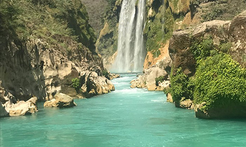

<<!DOCTYPE html>
<!-- 3.- Desarrolle una página que contenga 3 imágenes: La primera imagen debe mostrarse con
250 pixeles de ancho por 400 pixeles de alto. La segunda imagen debe ser de 300px por
300px y la tercera imagen de 500px de ancho por 300px alto. Busque imágenes que sean
adecuadas para las proporciones a mostrar. -->


<html lang="es">
  <head>
    <meta charset="utf-8">
    <title>Practica 3</title>
  </head>
  <body>
    
    
    

  </body>
</html>
